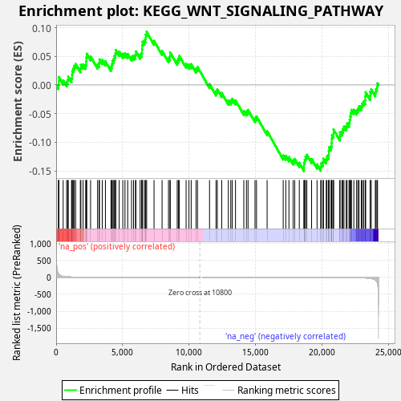
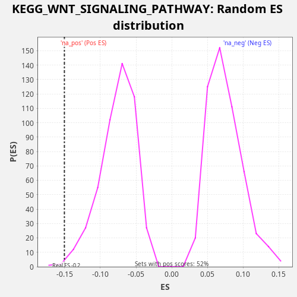

| Dataset | LabCL |
| Phenotype | NoPhenotypeAvailable |
| Upregulated in class | na_neg |
| GeneSet | KEGG_WNT_SIGNALING_PATHWAY |
| Enrichment Score (ES) | -0.15036064 |
| Normalized Enrichment Score (NES) | -1.9742546 |
| Nominal p-value | 0.006185567 |
| FDR q-value | 0.067575336 |
| FWER p-Value | 0.389 |

| SYMBOL | RANK IN GENE LIST | RANK METRIC SCORE | RUNNING ES | CORE ENRICHMENT | |
|---|---|---|---|---|---|
| 1 | RUVBL1 | 173 | 108.342 | 0.0003 | No |
| 2 | FZD4 | 199 | 96.193 | 0.0067 | No |
| 3 | CXXC4 | 204 | 93.900 | 0.0140 | No |
| 4 | FZD1 | 528 | 28.735 | 0.0081 | No |
| 5 | SFRP4 | 788 | 17.191 | 0.0048 | No |
| 6 | PLCB2 | 871 | 14.699 | 0.0089 | No |
| 7 | FZD2 | 912 | 13.739 | 0.0147 | No |
| 8 | CTBP1 | 1157 | 9.474 | 0.0120 | No |
| 9 | CREBBP | 1199 | 8.831 | 0.0178 | No |
| 10 | DKK1 | 1214 | 8.613 | 0.0246 | No |
| 11 | PRKACB | 1282 | 7.741 | 0.0293 | No |
| 12 | AXIN1 | 1360 | 6.997 | 0.0336 | No |
| 13 | PPP2R1A | 1465 | 6.060 | 0.0367 | No |
| 14 | WNT3 | 1820 | 3.839 | 0.0295 | No |
| 15 | DVL2 | 1863 | 3.608 | 0.0353 | No |
| 16 | PPP2CB | 2028 | 2.982 | 0.0359 | No |
| 17 | NFATC3 | 2223 | 2.446 | 0.0353 | No |
| 18 | CACYBP | 2263 | 2.354 | 0.0412 | No |
| 19 | WNT6 | 2273 | 2.330 | 0.0483 | No |
| 20 | WNT11 | 2300 | 2.273 | 0.0546 | No |
| 21 | WNT5A | 2590 | 1.752 | 0.0501 | No |
| 22 | PLCB4 | 3114 | 1.090 | 0.0359 | No |
| 23 | PPP2R5B | 3230 | 0.983 | 0.0386 | No |
| 24 | PSEN1 | 3259 | 0.963 | 0.0449 | No |
| 25 | CCND3 | 3468 | 0.842 | 0.0437 | No |
| 26 | CAMK2B | 3706 | 0.716 | 0.0414 | No |
| 27 | DAAM1 | 4121 | 0.527 | 0.0316 | No |
| 28 | PRKX | 4195 | 0.498 | 0.0361 | No |
| 29 | SFRP1 | 4229 | 0.487 | 0.0422 | No |
| 30 | PORCN | 4332 | 0.446 | 0.0454 | No |
| 31 | WNT4 | 4379 | 0.436 | 0.0510 | No |
| 32 | FRAT2 | 4459 | 0.413 | 0.0551 | No |
| 33 | PRKACA | 4492 | 0.405 | 0.0613 | No |
| 34 | NFAT5 | 4743 | 0.340 | 0.0584 | No |
| 35 | FZD6 | 5014 | 0.280 | 0.0546 | No |
| 36 | CSNK2B | 5178 | 0.250 | 0.0553 | No |
| 37 | VANGL2 | 5381 | 0.216 | 0.0544 | No |
| 38 | RAC1 | 5673 | 0.178 | 0.0498 | No |
| 39 | RHOA | 5821 | 0.160 | 0.0512 | No |
| 40 | FZD7 | 5966 | 0.146 | 0.0527 | No |
| 41 | DKK2 | 6001 | 0.142 | 0.0587 | No |
| 42 | PRKCG | 6317 | 0.115 | 0.0531 | No |
| 43 | GSK3B | 6434 | 0.105 | 0.0558 | No |
| 44 | DVL3 | 6459 | 0.103 | 0.0622 | No |
| 45 | SIAH1 | 6471 | 0.103 | 0.0693 | No |
| 46 | NLK | 6496 | 0.100 | 0.0757 | No |
| 47 | CSNK2A2 | 6636 | 0.091 | 0.0774 | No |
| 48 | MAP3K7 | 6716 | 0.085 | 0.0816 | No |
| 49 | RAC2 | 6741 | 0.084 | 0.0881 | No |
| 50 | TBL1XR1 | 6807 | 0.080 | 0.0928 | No |
| 51 | SMAD4 | 7362 | 0.053 | 0.0773 | No |
| 52 | PLCB3 | 7967 | 0.031 | 0.0597 | No |
| 53 | FZD8 | 8449 | 0.019 | 0.0472 | No |
| 54 | PPARD | 8562 | 0.017 | 0.0501 | No |
| 55 | SENP2 | 8581 | 0.017 | 0.0568 | No |
| 56 | PPP3R1 | 9106 | 0.009 | 0.0425 | No |
| 57 | CCND1 | 9193 | 0.007 | 0.0464 | No |
| 58 | CHD8 | 9266 | 0.007 | 0.0509 | No |
| 59 | CHP1 | 9775 | 0.003 | 0.0373 | No |
| 60 | MAPK9 | 9989 | 0.002 | 0.0359 | No |
| 61 | FZD9 | 10157 | 0.001 | 0.0364 | No |
| 62 | PPP2R5D | 10525 | 0.000 | 0.0287 | No |
| 63 | AXIN2 | 10636 | 0.000 | 0.0316 | No |
| 64 | MMP7 | 11537 | -0.001 | 0.0017 | No |
| 65 | PPP2CA | 12025 | -0.002 | -0.0110 | No |
| 66 | SMAD2 | 12122 | -0.003 | -0.0075 | No |
| 67 | FRAT1 | 12453 | -0.005 | -0.0138 | No |
| 68 | FZD5 | 12951 | -0.010 | -0.0269 | No |
| 69 | APC | 13133 | -0.013 | -0.0270 | No |
| 70 | ROCK1 | 13240 | -0.015 | -0.0239 | No |
| 71 | NFATC2 | 13490 | -0.018 | -0.0268 | No |
| 72 | SFRP5 | 14115 | -0.032 | -0.0452 | No |
| 73 | FOSL1 | 14313 | -0.037 | -0.0459 | No |
| 74 | PPP2R5A | 14434 | -0.041 | -0.0434 | No |
| 75 | SMAD3 | 14958 | -0.060 | -0.0576 | No |
| 76 | SKP1 | 15069 | -0.065 | -0.0547 | No |
| 77 | CTNNB1 | 15868 | -0.103 | -0.0804 | No |
| 78 | FBXW11 | 17077 | -0.193 | -0.1230 | No |
| 79 | CUL1 | 17271 | -0.215 | -0.1236 | No |
| 80 | LEF1 | 17509 | -0.244 | -0.1259 | No |
| 81 | PPP3CA | 17823 | -0.285 | -0.1314 | No |
| 82 | PRKCA | 17946 | -0.300 | -0.1290 | No |
| 83 | WNT10A | 18289 | -0.356 | -0.1358 | No |
| 84 | BTRC | 18642 | -0.423 | -0.1429 | Yes |
| 85 | FZD10 | 18644 | -0.424 | -0.1355 | Yes |
| 86 | LRP6 | 18701 | -0.435 | -0.1303 | Yes |
| 87 | ROCK2 | 18756 | -0.449 | -0.1251 | Yes |
| 88 | MYC | 18855 | -0.470 | -0.1217 | Yes |
| 89 | RBX1 | 19213 | -0.569 | -0.1291 | Yes |
| 90 | PRICKLE1 | 19624 | -0.707 | -0.1386 | Yes |
| 91 | PRKCB | 19900 | -0.824 | -0.1425 | Yes |
| 92 | APC2 | 19938 | -0.839 | -0.1366 | Yes |
| 93 | NFATC4 | 20068 | -0.893 | -0.1345 | Yes |
| 94 | PPP2R5E | 20105 | -0.910 | -0.1285 | Yes |
| 95 | EP300 | 20314 | -1.013 | -0.1297 | Yes |
| 96 | PPP3CC | 20369 | -1.040 | -0.1245 | Yes |
| 97 | PPP2R5C | 20494 | -1.127 | -0.1222 | Yes |
| 98 | WNT7A | 20506 | -1.134 | -0.1152 | Yes |
| 99 | CHP2 | 20529 | -1.150 | -0.1086 | Yes |
| 100 | NKD2 | 20675 | -1.239 | -0.1072 | Yes |
| 101 | WNT9A | 20720 | -1.272 | -0.1015 | Yes |
| 102 | CTBP2 | 20730 | -1.279 | -0.0944 | Yes |
| 103 | WNT5B | 20746 | -1.292 | -0.0876 | Yes |
| 104 | JUN | 20862 | -1.388 | -0.0849 | Yes |
| 105 | VANGL1 | 20864 | -1.392 | -0.0775 | Yes |
| 106 | WNT7B | 21343 | -1.928 | -0.0898 | Yes |
| 107 | NFATC1 | 21346 | -1.931 | -0.0825 | Yes |
| 108 | TBL1X | 21493 | -2.111 | -0.0810 | Yes |
| 109 | WNT10B | 21569 | -2.247 | -0.0767 | Yes |
| 110 | TCF7L1 | 21650 | -2.397 | -0.0726 | Yes |
| 111 | DVL1 | 21817 | -2.731 | -0.0720 | Yes |
| 112 | PLCB1 | 21880 | -2.881 | -0.0671 | Yes |
| 113 | PPP2R1B | 22027 | -3.270 | -0.0657 | Yes |
| 114 | CAMK2A | 22078 | -3.422 | -0.0603 | Yes |
| 115 | WNT2B | 22120 | -3.556 | -0.0545 | Yes |
| 116 | MAPK8 | 22156 | -3.702 | -0.0485 | Yes |
| 117 | RAC3 | 22213 | -3.901 | -0.0434 | Yes |
| 118 | CSNK2A1 | 22389 | -4.703 | -0.0432 | Yes |
| 119 | PRICKLE2 | 22599 | -6.064 | -0.0444 | Yes |
| 120 | TP53 | 22695 | -6.719 | -0.0409 | Yes |
| 121 | MAPK10 | 22783 | -7.464 | -0.0370 | Yes |
| 122 | CAMK2G | 22952 | -9.187 | -0.0365 | Yes |
| 123 | TCF7 | 23029 | -10.168 | -0.0322 | Yes |
| 124 | CSNK1E | 23126 | -11.573 | -0.0287 | Yes |
| 125 | NKD1 | 23245 | -13.778 | -0.0261 | Yes |
| 126 | CSNK1A1 | 23258 | -14.031 | -0.0192 | Yes |
| 127 | PPP3CB | 23279 | -14.507 | -0.0125 | Yes |
| 128 | CAMK2D | 23616 | -26.350 | -0.0190 | Yes |
| 129 | LRP5 | 23621 | -26.523 | -0.0117 | Yes |
| 130 | WNT16 | 23701 | -31.788 | -0.0075 | Yes |
| 131 | FZD3 | 24004 | -73.070 | -0.0126 | Yes |
| 132 | TCF7L2 | 24058 | -91.364 | -0.0073 | Yes |
| 133 | CTNNBIP1 | 24134 | -129.068 | -0.0030 | Yes |
| 134 | CCND2 | 24173 | -179.177 | 0.0029 | Yes |

{kind=link}
{kind=link}